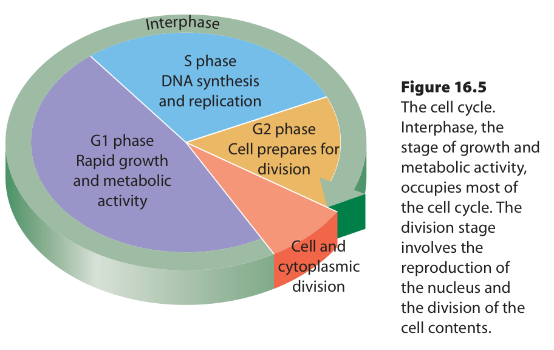

Learn · Chapter 16
How does a cell prepare its genetic material before division?
Learning goal
Explain G1, S, G2, mitosis and cytokinesis, connecting DNA replication with later inheritance by daughter cells.
Before you begin
Ploidy counts chromosome sets. Copying a chromosome does not yet separate the copies into different cells.
Expected work: one completed lesson check. Supported practice, videos and textbook questions are optional. Saved writing is not automatically graded.
Chapter 16 · printed pp. 551–555
Key terms: · · ·
Key terms
Use these definitions when you need help with a term.
The cell cycle is the sequence from one cell division to the next in an actively dividing cell. During G1, the cell grows and carries out normal metabolic work. During , it copies each 's DNA. During G2, it continues preparation, including producing and organizing materials needed for division. Together, G1, S and G2 are .

[Figure: Original textbook cell-cycle diagram. Interphase contains G1 growth and metabolic activity, S DNA synthesis and replication, and G2 preparation for division. The smaller region is labelled cell and cytoplasmic division. Follow G1 to S to G2 to division, then a new cycle; wedge sizes are schematic, not fixed tissue timings. | ./assets/figures/ch16-source-cell-cycle-fig16-5.png]Trace the source diagram from G1 to S to G2, then through the division region and back to G1 for a daughter cell that continues cycling. The broad interphase region contains three different kinds of work; it is not a period when nothing happens. The wedges illustrate the sequence and a broad timing relationship, not universal durations or exact percentages for every tissue.
In a representative snapshot of an actively cycling, unsynchronized population, a longer phase is more likely to contain more observed cells. That makes a large interphase fraction consistent with cells spending much of the cycle there. Some cells leave the active cycle or divide rarely, so a sample containing many nondividing cells cannot automatically be used to time a normal division cycle.
Replication during S phase produces : two copied DNA structures that remain associated as one replicated chromosome before separation. DNA amount doubles, but the chromosome count has not doubled at that point. The counting boundary is separation of the sisters, not the first appearance of an X shape.
For example, a typical human body cell in G1 has 46 chromosomes, each with one DNA molecule. After S phase and before sister separation, it still has 46 chromosomes but has 92 chromatids and twice the DNA amount. Each chromosome was copied; no new homologous chromosome type was added. The cell still contains two chromosome sets.
Return to the earlier rod-to-X drawing: the X represents one replicated chromosome with two whole sister chromatids. DNA is generally not condensed into that textbook shape throughout S phase. Textbook pp.552/554 sometimes call the joined copies a chromosome pair or two identical chromosomes; for the counts in this course, treat them as sisters of one replicated chromosome until separation, not as a homologous pair.
When sisters separate during anaphase, each becomes an individual chromosome. Later, normal mitosis and cytoplasmic division distribute a full chromosome complement to each daughter. Always state whether you mean the still-undivided parent cell or one daughter cell before reporting a total; the next lesson develops that counting problem further.
Mitosis distributes the replicated chromosomes into two daughter nuclei. Cytokinesis divides the cytoplasm and separates the daughter cells. The processes are coordinated and can overlap, but they are not the same event. If nuclear division finishes while cytokinesis does not, two nuclei can remain within a shared cytoplasm.
Copying DNA before mitosis provides a copy of every chromosome for each daughter nucleus. Without that preparation and orderly distribution, one or both daughter cells could lack genetic information needed for normal function. Normal division supports growth by adding cells, maintenance by replacing worn-out cells and repair of damaged tissues.
Adding cells also avoids relying only on endlessly enlarging existing cells. As a cell grows, its volume increases faster than its surface area. More cell contents need nutrients and waste removal, but exchange occurs across the membrane. This changing surface-area-to-volume relationship helps limit how large a cell can grow.
Signals and checkpoints regulate progress through the cycle, including whether DNA has been properly replicated and whether division can proceed. Failures of regulation can allow abnormal cells to keep dividing and can contribute to cancer. Rapid division alone is not a cancer diagnosis: normal growth and repair can also involve rapid division.
Given: A model diploid G1 cell has six unreplicated chromosomes. It completes S phase normally, but no sister chromatids have separated. Question: What has changed, and what has remained the same?
Check a different condition: if mitosis completed but cytokinesis failed, the model could have two nuclei in one shared cytoplasm. Count nuclei and cells separately; two nuclei do not by themselves demonstrate that two daughter cells have formed.